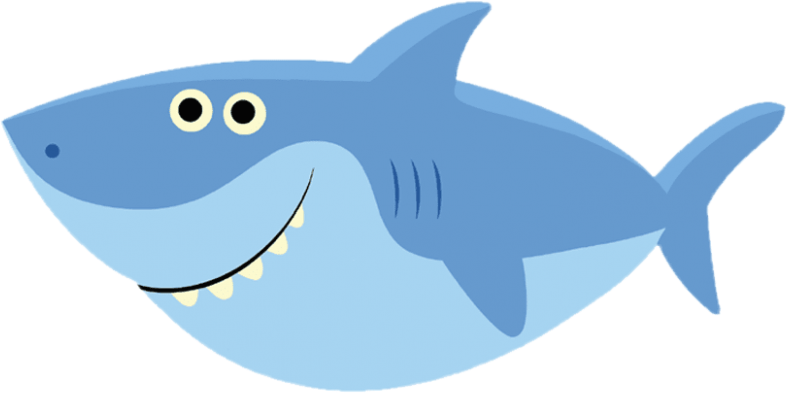
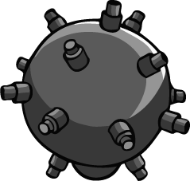
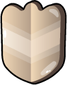
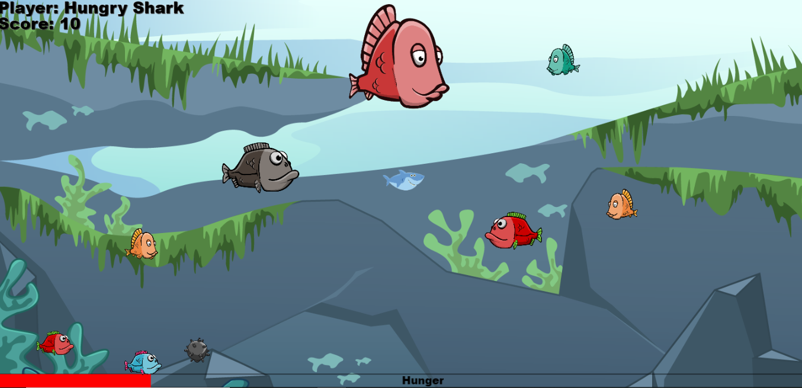

Hungry Shark Leírása
A játék lényege:
- A cápa életben tartása minél hosszabb ideig, miközben a legtöbb pontszámot gyűjti össze.
- A játékos a cápát az egér segítségével irányítja.
- Az éhségjelző mutatja a cápa aktuális éhségét, ha eléri a maximumot, akkor vége a játéknak.
- A cápa éhsége folyamatosan növekszik.
- A cápa a kisebb halakat meg tudja enni, ezzel éhségét csökkenti.
- A nagyobb halak a cápá éhségét növelik.
- A szív bónusz 0%-ra állítja cápa éhségét.
- A bomba 50%-kal növeli a cápa éhségét.
- A pajzs bónusz rövid időre sebezhetetlenné teszi a cápát.
- Az aktuális játékmenetből az ESC billentyűvel lehet kilépni.
- Játék vége esetén a Leaderboard gombra kattintva megtekinthetőek az eredmények.
